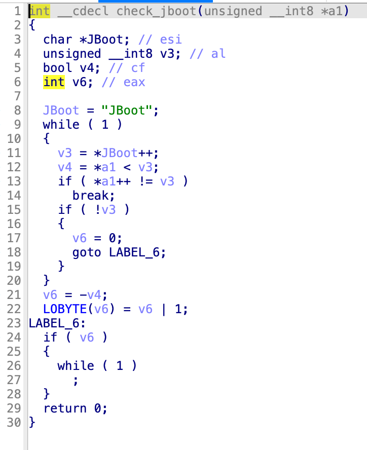
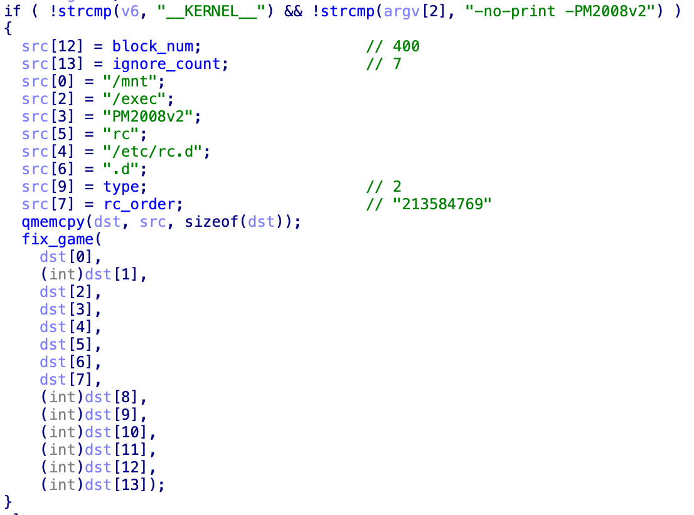

In the previous post, I mentioned that the game has a protection mechanism that destroys partitions. In this post, we’ll dig deeper into it.
For a game released in 2007, its hardening/protection is relatively outdated. It mainly relies on things like concatenation and signature-tweaking. It doesn’t have the “modern app hardening arms race” vibe. The annoying part is that there are many stages in the protection flow, and each game does it differently. On top of that, some development traits (compiler optimizations, coding style) make reverse engineering more difficult.
Extracting the game itself is actually straightforward: once the game is running, you can dump it via a shell from memory or from the filesystem (if the files are written to disk). But if you want to extract multiple different games, that becomes a hassle—so let’s start with static analysis.
All in all, this reversing process feels like solving a CTF Misc challenge: it requires quite a bit of logical deduction.
Reverse Engineering Traps
In general, when analyzing filesystem contents, you rarely start from the kernel. Usually you start with init-related files.
The first step is typically checking /etc/inittab. The script starts rc first, and then starts the graphical interface:
# Begin /etc/inittab
id:4:initdefault:
si::sysinit:/etc/rc.d/init.d/rc
x:4:respawn:/etc/X11/IGS &> /dev/null
# End /etc/inittab
/etc/rc.d/init.d/rc
#!/bin/bash
PATH=/bin:/sbin:/usr/bin:/usr/sbin
export PATH
mount -n -o remount,rw /
mount -n -t ramfs tmp /tmp
mount -n -t proc proc /proc
mount -n -t usbdevfs usbdevfs /proc/bus/usb
#echo "copy for etc"
cp -a /etc/* /tmp
mount -n -t ramfs etc /etc
cp -a /tmp/* /etc
rm -rf /tmp/*
#echo "copy for dev"
cp -a /dev/* /tmp
mount -n -t ramfs dev /dev
cp -a /tmp/* /dev
rm -rf /tmp/*
mount -n -t devpts pts /dev/pts
mount -n -t tmpfs shm /dev/shm
#echo "copy for var"
cp -a /var/* /tmp
mount -n -t ramfs var /var
cp -a /tmp/* /var
rm -rf /tmp/*
#echo "copy for root"
cp -a /root/.b* /tmp
mount -n -t ramfs root /root
cp -a /tmp/.b* /root
rm -rf /tmp/.b*
/sbin/hdparm -c1 -d1 -k1 -Xudma4 /dev/hdc &> /dev/null
/etc/X11/IGS
This script sets environment variables, starts X, then starts the card reader, and finally launches the game. Aside from the loop (which is a bit unusual), everything else looks normal. At this point, you’d definitely conclude /PM2008v2/PM2008v2 is the game binary.
#!/bin/sh
TZ="UCT"
TERM="xterm"
TempFile="/tmp/XTemp"
HZ="100"
PATH=/sbin:/usr/sbin:/bin:/usr/bin:/usr/X11R6/bin
LD_LIBRARY_PATH=/usr/X11R6/lib:/usr/X11R6/lib/modules/extensions
DISPLAY=:0
export PATH LD_LIBRARY_PATH DISPLAY TERM HZ TZ
ps -A | grep XFree86 | ( while read pid tty time command; do kill -9 $pid; done )
XFree86 &> /dev/null&
mwm &> /dev/null &
/usr/X11R6/bin/xsetroot -cursor /usr/X11R6/bitmaps/empty_ptr /usr/X11R6/bitmaps/empty_ptr
if [ -f $TempFile ];then
rm -rf $TempFile
sleep 10
exit 0
else
touch $TempFile
fi
/etc/rc.d/init.d/cardreader &> /dev/null&
export TZ="CST"
#Run Game
cd /PM2008v2
while [ 1 ]
do
./PM2008v2 &> /dev/null
sleep 5
done
Next, I analyzed PM2008v2. At first glance, it contains a lot of “executable loader” style code. Combined with the fact that many files previously had no magic bytes, I guessed it might be dynamically loading code and reconstructing ELF binaries. Later, Nova told me this thing is not the game at all—only then did I realize how abnormal it is. This file has a lot of glibc fingerprints and feels like a statically linked glibc executable.
For convenience in reversing and later porting the game, I needed to confirm the GCC and glibc versions. PM2008v2 shows GCC: (GNU) 3.3.1, but has no glibc version string.
So I went straight to the system libc.so and tentatively treated it as glibc 2.3.2. It’s hard to build on modern Linux; even in Docker I ran into issues.
Analyzing the “Fake Game” Executable
Building GCC 3.3.1
The target kernel is i686, so I built it on CentOS 4 running in VMware. To keep the optimized assembly as consistent as possible, I wanted the same GCC version and build settings. Building this environment also helps future analysis of other games on this platform—more upfront work means fewer detours later.
wget http://mirrors.aliyun.com/gnu/gcc/gcc-3.3.1/gcc-3.3.1.tar.gz
Using Aliyun’s CentOS vault repos, install development dependencies first:
yum groupinstall "Development Tools"
Configure like this, target i686. With old GCC versions it’s better not to compile in parallel—sometimes it breaks (3.3.1 was fine, 3.2.2 wasn’t). Then remove the system GCC and install this one:
../gcc-3.3.1/configure --prefix=/opt/gcc_3.3.1 --infodir=/usr/share/info --enable-shared --enable-threads=posix --disable-checking --with-system-zlib --enable-__cxa_atexit --disable-libunwind-exceptions --host=i686-pc-gnu-linux --build=i686-pc-linux-gnu --target=i686-pc-linux-gnu
make -j8
yum remove gcc
make install
Building glibc 2.3.2
wget http://mirrors.aliyun.com/gnu/glibc/glibc-2.3.2.tar.gz
wget http://mirrors.aliyun.com/gnu/glibc/glibc-linuxthreads-2.3.2.tar.gz
linuxthreads needs to be extracted into the glibc directory:
tar -zxvf glibc-2.3.2.tar.gz
cd glibc-2.3.2
tar -zxvf ../glibc-linuxthreads-2.3.2.tar.gz
When building glibc 2.3.2 you may hit some bugs and need patches. Conveniently, the E2000 platform’s Linux is also an LFS-based system, so you can download patches from LFS glibc patches.
patch -p1 < ../patches/glibc-2.3.2-sscanf-1.patch
patch -p1 < ../patches/glibc-2.3.2-inlining_fixes-2.patch
patch -p1 < ../patches/glibc-2.3.2-test_lfs-1.patch
Next, configure build options. For now I’ll keep it like this, because even with fine-grained optimization flags, the final assembly differs a lot from the target binary.
CC=/opt/gcc_3.3.1/bin/gcc CFLAGS="-march=pentium4 -O2" ../glibc-2.3.2/configure --prefix=/lib --disable-profile --enable-add-ons --libexecdir=/usr/lib --with-headers=/usr/include
Main differences:
- Stack frame: most functions in the target binary return with
0xC9 leave, while my build typically doesmov esp, ebpthenpop ebp. - Inlining: calls inside some medium-length functions in the target binary are optimized into inline code.
Even if I set optimization to O3, it barely changes. Manually tweaking -fomit-frame-pointer, -finline-limit=n, etc. also didn’t help. Maybe it needs __inline__ somewhere; I didn’t have time to verify.
With this situation, generating FLIRT signatures with FLAIR barely recovers symbols for functions that still contain internal calls.
After analysis, PM2008v2 is basically just a killdisk function, statically linked with glibc.

Therefore, if you execute inittab directly, it’s impossible to launch the actual game.
System Initialization Analysis
Community Reverse Engineering Notes
Nova told me some information earlier. But honestly, from these notes alone I can’t infer the exact loading flow. I can only tell the file header needs to be restored, rc0.d is actually an ELF and will be executed at boot. Also, the Submarine Crisis game files differ somewhat from my PM2008 game files.

https://github.com/batteryshark/igstools/blob/main/scripts/igs_rofsv1_dumpexec.py
This script is used to recover game files. I tried it and it can produce an ELF, but importing it into IDA causes errors. I didn’t know how the generated file is supposed to run, so I still needed to analyze it myself.
Analyzing the Kernel Boot Flow
By analyzing dependencies and other environment variables, I still couldn’t find any path that launches the game. In the previous post, I analyzed filesystem mounting; after mounting, there’s a whole series of operations. IDA may fail to decompile extremely large functions, but that’s not a big problem—the real pain point isn’t here.

In the previous post, since I was analyzing a filesystem that’s a modified fork of open-source code, I could compare against the original, so not recovering other symbols was fine. This kernel is 2.4; the bzImage doesn’t carry a symbol table. A lot of code here is developed by IGS themselves; some syscalls aren’t invoked via int. When syscalls are involved and symbols aren’t recovered, analysis is still annoying. If you want to use BinDiff, you’d need IDA 8, and I didn’t have time to port it to macOS. Linux has a syscall table; if IGS didn’t customize syscalls, you can directly transplant syscall symbols from your own built kernel.
Also, IDA 9 doesn’t parse this old Linux 2.4 kernel very well. Many xrefs and instructions aren’t recognized and need manual fixing.
Fixing Immediate-Value Xrefs
import ida_ida
import ida_bytes
import ida_ua
import idautils
def find_immediate_values_and_convert_to_offset(start_range, end_range):
converted_count = 0
checked_count = 0
min_ea = ida_ida.inf_get_min_ea()
max_ea = ida_ida.inf_get_max_ea()
print(f"EA range: 0x{start_range:X} - 0x{end_range:X}")
print(f"Immediate Value Range：0x{min_ea:X} - 0x{max_ea:X}")
for ea in idautils.Heads():
if not ida_bytes.is_code(ida_bytes.get_flags(ea)):
continue
insn = ida_ua.insn_t()
if ida_ua.decode_insn(insn, ea) == 0:
continue
if start_range <= ea and ea <= end_range:
for op_num in range(ida_ida.UA_MAXOP):
op = insn.ops[op_num]
if op.type == ida_ua.o_void:
break
if op.type == ida_ua.o_imm:
imm_value = op.value
if op.value > 0xFFFFFFFF:
imm_value = (0xFFFFFFFF & op.value)
checked_count += 1
if min_ea <= imm_value and imm_value <= max_ea:
if idc.op_offset(ea, op_num, REF_OFF32):
converted_count += 1
else:
print(f" -> Convert Failed: 0x{ea:X}[{op_num}]")
print(f"Immediate Value: {checked_count}, Converted: {converted_count}")
Fixing String Data
Possibly because xrefs aren’t fully recognized, string recognition often misses a few bytes at the beginning. You need to manually fix strings.
def get_the_firsstr_ea(ea):
addr = ea - 1
last_byte = ida_bytes.get_byte(addr)
if 32 < last_byte and last_byte < 127:
ea = get_the_firsstr_ea(addr)
return ea
def find_str_address(start_ea, end_ea):
current_ea = start_ea
found_count = 0
while current_ea < end_ea:
if current_ea == ida_idaapi.BADADDR:
break
address_flags = ida_bytes.get_flags(current_ea)
if ida_bytes.is_strlit(address_flags):
str_size = ida_bytes.get_item_size(current_ea)
the_first_str_addr = get_the_firsstr_ea(current_ea)
if the_first_str_addr != current_ea:
len = current_ea - the_first_str_addr + str_size
ida_bytes.create_strlit(the_first_str_addr, len, 0)
print(f"Fix str at 0x{current_ea:X}, before: {str_size}, after: {len}")
current_ea += ida_bytes.get_item_size(current_ea)
continue
Kernel Thread

From the code above, we can see the first step of game initialization is to run /bin/zsh with these parameters:
export HOME=/
export TERM=linux
export PATH=/bin:/usr/bin:/sbin:/usr/sbin
/bin/zsh /etc/rc.d/rc0.d __KERNEL__ -no-print -PM2008v2
The next step is running /mnt/GECA:
export HOME=/
export TERM=linux
export PATH=/bin:/usr/bin:/sbin:/usr/sbin
/mnt/GECA /etc/rc.d/rc0.d __KERNEL__ -no-print -PM2008v2
Finally, it tries these:
if ( execute_command )
run_init_process((const char *)execute_command);
run_init_process("/sbin/init"); // 存在
run_init_process("/etc/init"); // 不存在
run_init_process("/bin/init"); // 不存在
run_init_process("/bin/sh"); // 指向bash
The kernel cmdline can be found in parse_cmdline_early, and is not controlled by LILO.
If you set an external boot cmdline, there’s a backdoor that checks whether the bootloader parameter equals “JBoot”. If it doesn’t, it goes into an infinite loop.

Does this “JBoot” stand for a bootloader written by someone named James? 👀
bootloader=JBoot
The built-in kernel boot args:
root=/dev/hdc2 ro console=ttyS1,115200 BOOT_IMAGE=PM2008v2
It doesn’t set init=, so it will definitely execute /sbin/init, and then /etc/inittab.
Getting Stuck Restoring ZSH Symbols
The trail leads to /bin/zsh. Its entry point looks the same as PM2008v2, so I assumed it’s also based on some modified glibc. But after importing a FLIRT signature, only the innermost functions were recognized—likely due to the same optimization issue.
/Applications/IDA\ Professional\ 9.1.app/Contents/MacOS/tools/flair/sigmake ~/RE/igs/libc.pat ~/RE/igs/libc2.3.2.o2.sig
/Applications/IDA\ Professional\ 9.1.app/Contents/MacOS/tools/flair/pelf ~/RE/igs/libc.a ~/RE/igs/libc.pat

At this point I still don’t know exactly which GCC and glibc it was based on. Considering that many executables later may also use glibc, I need to pin down the version and see if there’s a fast way to recover symbols.
Dependency analysis
Using YAFAF (a tool I wrote five years ago), I can quickly find relevant dependencies. rc*.d should be game code.

rc0.d
GLIBC_2.1
GLIBC_2.0
GCC: (GNU) 3.2.2 20030222 (Red Hat Linux 3.2.2-5)
rc2.d
GCC_3.0
GLIBC_2.0
GLIBC_2.1
GLIBC_2.2.3
GLIBC_2.1.3
GLIBC_2.3
GLIBC_2.2
GLIBC_2.3.2
GLIBC_2.0
GLIBC_2.1
GLIBCPP_3.2
GLIBC_2.2
GLIBC_2.1.3
GLIBC_2.3
GLIBC_2.3.2
rc9
GCC: (GNU) 3.3.1
GCC: (GNU) 3.2.1 20021207 (Red Hat Linux 8.0 3.2.1-2)
GCC: (GNU) 3.2.1 20030202 (Red Hat Linux 8.0 3.2.1-7)
GCC: (GNU) 3.2.2 20030222 (Red Hat Linux 3.2.2-4)
GCC: (GNU) 3.2.2 20030222 (Red Hat Linux 3.2.2-5)
From these fingerprints, these files look like fragments stitched together from ELF files built in multiple different environments.
And /sbin/init also appears to be based on glibc 2.3.x, so I tried building glibc 2.3.2 with GCC 3.2.2. On CentOS 3, parallel compilation fails for this GCC version. Luckily, I’d seen similar errors when building OpenWrt in the past—otherwise I would’ve been stuck for a long time with zero search results about the root cause.
../gcc-3.2.2/configure --prefix=/opt/gcc_3.2.2 --infodir=/usr/share/info --enable-shared --enable-threads=posix --disable-checking --with-system-zlib --enable-__cxa_atexit
make
make install
When building glibc, whether O2 or O3, it almost never inlines functions. I still don’t understand why, can’t find answers, and asking LLMs didn’t help either.
CC=/opt/gcc_3.2.2/bin/gcc CFLAGS="-march=pentium4 -O2" ../glibc-2.3.2/configure --prefix=/lib --disable-profile --enable-add-ons --libexecdir=/usr/lib --with-headers=/usr/include
CC=/opt/gcc_3.2.2/bin/gcc CFLAGS="-O3" ../glibc-2.3.2/configure --prefix=/lib --disable-profile --enable-add-ons --libexecdir=/usr/lib --with-headers=/usr/include
Recovering ZSH Symbols
I don’t like doing repetitive mechanical work. If I had to reverse zsh directly, I’d be bored to death.
This IDA version isn’t great at recognizing instructions; many places require manual recovery. After using the script below, the next step is to recover function entry points (I had a similar script in the previous post).
def find_and_make_instrument(start_ea, end_ea):
image_base = idaapi.get_imagebase()
current_ea = start_ea
found_count = 0
while current_ea < end_ea:
if current_ea == ida_idaapi.BADADDR:
break
address_flags = ida_bytes.get_flags(current_ea)
if ida_bytes.is_code(address_flags):
current_ea += ida_bytes.get_item_size(current_ea)
continue
else:
ida_bytes.del_items(0x8052606, 0, 1)
if ida_ua.can_decode(current_ea):
print("Decode instruments at 0x{:X}".format(current_ea))
insn_size = ida_ua.decode_insn(ida_ua.insn_t(), current_ea)
ida_bytes.del_items(current_ea, 0, insn_size)
offset = ida_ua.create_insn(current_ea)
if offset > 0:
found_count += 1
if idc.get_func_flags(current_ea) != -1:
current_ea += offset
continue
else:
print("Decode instruments failed at 0x{:X}".format(current_ea))
return
else:
print("Create instruments failed at 0x{:X}".format(current_ea))
current_ea += 1
continue
print("Search finished, {} instruments created".format(found_count))
find_and_make_instrument(0x080480B4, 0x0808F000)
Since there’s no way to use a glibc signature here, I came up with a somewhat naive approach—but it’s faster than invoking MCP-based analysis.
First, fully recover glibc strings from file A (my self-compiled one) and recover function entry points. For file B, first fix function entry points, then fix immediate-value offsets, fix strings, deduplicate, remove overly short strings, then match strings one-by-one against file A and filter results.
Then traverse xrefs from the filtered results, and pick those that are not duplicated and are functions:
- If those functions in file A have symbols, apply them to file B.
- For functions where strings are pushed as arguments, find all calls in the current function’s scope; if the callee address has no symbol, use this method to recover symbols for argument-pushed callees.
- Recursively apply symbols (e.g., after recovering a callee, scan inside it for other callees). This feels unnecessary because it quickly runs into many edge cases.
IDA Pro script: extract strings and function xrefs from target A
#!/usr/bin/env python3
# -*- coding: utf-8 -*-
import json
import ida_funcs
import ida_name
import ida_bytes
import ida_xref
import ida_idaapi
import ida_ua
import ida_segment
import idautils
try:
import ida_allins
HAS_ALLINS = True
except ImportError:
HAS_ALLINS = False
def find_target_function(xref_ea):
insn = ida_ua.insn_t()
if not ida_ua.decode_insn(insn, xref_ea):
return None
current_func = ida_funcs.get_func(xref_ea)
search_ea = xref_ea
while search_ea < current_func.end_ea:
search_ea = ida_bytes.next_head(search_ea, ida_idaapi.BADADDR)
if search_ea == ida_idaapi.BADADDR:
break
if not ida_ua.decode_insn(insn, search_ea):
continue
if insn.itype in [ida_allins.NN_call, ida_allins.NN_callfi, ida_allins.NN_callni]:
target_ea = insn.ops[0].addr if insn.ops[0].type == ida_ua.o_near else None
if target_ea:
target_func_name = ida_name.get_name(target_ea)
if target_func_name:
return target_func_name
else:
func = ida_funcs.get_func(target_ea)
if func:
return ida_funcs.get_func_name(func.start_ea)
return None
def get_string_xrefs_with_functions():
"""
获取IDAPro中所有字符串及其交叉引用信息
返回JSON格式数据，包含字符串地址、内容、长度和引用它的函数名
"""
results = []
# 初始化字符串列表
strings = idautils.Strings()
strings.setup()
print("[+] 开始扫描字符串...")
for i, string_item in enumerate(strings):
# 获取字符串基本信息
str_ea = string_item.ea
str_length = string_item.length
str_type = string_item.strtype
# 获取字符串内容
try:
str_content = str(string_item)
except:
str_content = ""
# 获取段信息
seg = ida_segment.getseg(str_ea)
if seg:
seg_start = seg.start_ea
seg_name = ida_segment.get_segm_name(seg)
if not seg_name:
seg_name = f"seg_{seg_start:08X}"
else:
seg_start = 0
seg_name = "unknown"
# 收集所有引用该字符串的地址
xref_functions = []
# 获取段信息
seg = ida_segment.getseg(str_ea)
if seg:
seg_start = seg.start_ea
seg_name = ida_segment.get_segm_name(seg)
if not seg_name:
seg_name = f"seg_{seg_start:08X}"
else:
seg_start = 0
seg_name = "unknown"
target_functions = [] # 存储目标函数名
# 使用XrefsTo获取所有引用
for xref in idautils.XrefsTo(str_ea):
xref_ea = xref.frm
# 获取引用地址所在的函数
func = ida_funcs.get_func(xref_ea)
if func:
# 获取函数名
func_name = ida_funcs.get_func_name(func.start_ea)
if func_name and func_name not in xref_functions:
xref_functions.append(func_name)
# 分析目标函数
target_func = find_target_function(xref_ea)
if target_func and target_func not in target_functions:
target_functions.append(target_func)
# else:
# # 如果不在函数中，尝试获取该地址的名称
# name = ida_name.get_name(xref_ea)
# if name and name not in xref_functions:
# xref_functions.append(f"@{name}")
# else:
# # 如果没有名称，使用地址
# addr_name = f"addr_0x{xref_ea:X}"
# if addr_name not in xref_functions:
# xref_functions.append(addr_name)
# 添加数据引用
# for xref_ea in idautils.DataRefsTo(str_ea):
# func = ida_funcs.get_func(xref_ea)
# if func:
# func_name = ida_funcs.get_func_name(func.start_ea)
# if func_name and func_name not in xref_functions:
# xref_functions.append(func_name)
# # 分析目标函数
# target_func = find_target_function(xref_ea)
# if target_func and target_func not in target_functions:
# target_functions.append(target_func)
# else:
# name = ida_name.get_name(xref_ea)
# if name and name not in xref_functions:
# xref_functions.append(f"@{name}")
# else:
# addr_name = f"addr_0x{xref_ea:X}"
# if addr_name not in xref_functions:
# xref_functions.append(addr_name)
# 创建结果条目
string_info = {
"ea": str_ea,
"str": str_content,
"len": str_length,
"seg_addr": seg_start,
"seg_name": seg_name,
"xrefs": xref_functions,
"target_func_name": target_functions # 新增字段
}
results.append(string_info)
if (i + 1) % 100 == 0:
print(f"[+] 已处理 {i + 1} 个字符串...")
print(f"[+] 总共找到 {len(results)} 个字符串")
return results
def main():
# 获取并保存字符串信息
strings_data = get_string_xrefs_with_functions()
unique_data = []
for i, string_info in enumerate(strings_data):
duplicated = False
if len(string_info['str']) > 10 and string_info['seg_name'] == '.rodata' and string_info['xrefs']:
for j, string_info1 in enumerate(strings_data):
if string_info1['str'] == string_info['str'] and string_info['ea'] != string_info1['ea']:
print(f"\n{i+1}. 重复内容地址: 0x{string_info['ea']:08X} 0x{string_info1['ea']:08X} 字符串: {repr(string_info1['str'])}")
duplicated = True
break
if not duplicated:
unique_data.append(string_info)
with open("strings_with_xrefs.json", "w") as f:
json.dump(unique_data, f, ensure_ascii=False, indent=2)
print(f"\n[+] 分析完成! 总共发现 {len(unique_data)} 个字符串")
if __name__ == "__main__":
main()
IDA Pro script: apply xref symbols from A to B
#!/usr/bin/env python
# -*- coding: utf-8 -*-
import json
import ida_bytes
import ida_name
import ida_funcs
import ida_xref
import ida_kernwin
import ida_segment
import idautils
import ida_idaapi
try:
import ida_allins
HAS_ALLINS = True
except ImportError:
HAS_ALLINS = False
def find_target_function(xref_ea):
insn = ida_ua.insn_t()
if not ida_ua.decode_insn(insn, xref_ea):
return None
current_func = ida_funcs.get_func(xref_ea)
search_ea = xref_ea
while search_ea < current_func.end_ea:
search_ea = ida_bytes.next_head(search_ea, ida_idaapi.BADADDR)
if search_ea == ida_idaapi.BADADDR:
break
if not ida_ua.decode_insn(insn, search_ea):
continue
if insn.itype in [ida_allins.NN_call, ida_allins.NN_callfi, ida_allins.NN_callni]:
target_ea = insn.ops[0].addr if insn.ops[0].type == ida_ua.o_near else None
if target_ea:
target_func_name = ida_name.get_name(target_ea)
if target_func_name:
return target_func_name, target_ea
else:
func = ida_funcs.get_func(target_ea)
if func:
return ida_funcs.get_func_name(func.start_ea), func.start_ea
return None, None
def process_string_data(json_file_path):
"""
从JSON文件读取字符串数据，在rodata段搜索字符串，
跳转到第一个交叉引用的函数，并根据需要重命名函数
参数:
json_file_path: JSON文件路径
"""
try:
# 读取JSON文件
with open(json_file_path, 'r', encoding='utf-8') as f:
string_data_list = json.load(f)
print(f"成功读取JSON文件，包含 {len(string_data_list)} 个字符串条目")
# 获取.rodata段
rodata_seg = None
for seg in idautils.Segments():
seg_name = ida_segment.get_segm_name(ida_segment.getseg(seg))
if seg_name == ".rodata":
rodata_seg = ida_segment.getseg(seg)
break
if not rodata_seg:
print("错误：无法找到.rodata段")
return
print(f"找到.rodata段: 0x{rodata_seg.start_ea:X} - 0x{rodata_seg.end_ea:X}")
# 处理每个字符串条目
for idx, item in enumerate(string_data_list):
# print(f"\n[{idx + 1}/{len(string_data_list)}] 处理字符串: '{item['str']}'")
# 在rodata段搜索字符串
string_to_search = item['str']
found_ea = search_string_in_segment(string_to_search, rodata_seg)
if found_ea == ida_idaapi.BADADDR:
# print(f" 未在.rodata段找到字符串 '{string_to_search}'")
continue
# 获取字符串的交叉引用
xrefs = get_xrefs_to_address(found_ea)
if not xrefs:
print(f" 字符串在 0x{found_ea:X} 没有交叉引用")
continue
print(f" 找到 {len(xrefs)} 个交叉引用")
# 获取第一个交叉引用
first_xref = xrefs[0]
# 找到包含该交叉引用的函数
func = ida_funcs.get_func(first_xref)
if not func:
print(f" 0x{first_xref:X} 不在任何函数中")
continue
target_func_name, target_func_ea = find_target_function(first_xref)
if target_func_name:
if target_func_name.startswith('sub_') and item['target_func_name']:
rename_function(target_func_ea, item['target_func_name'][0])
func_ea = func.start_ea
current_func_name = ida_funcs.get_func_name(func_ea)
print(f" 目标函数地址: 0x{func_ea:X}")
print(f" 当前函数名: {current_func_name}")
# 检查函数是否有自定义名称
if is_auto_generated_name(current_func_name):
# 使用JSON中提供的xrefs第一项作为新的函数名
if 'xrefs' in item and item['xrefs'] and len(item['xrefs']) > 0:
new_name = item['xrefs'][0]
if rename_function(func_ea, new_name):
print(f" ✓ 函数重命名为: {new_name}")
else:
print(f" ✗ 函数重命名失败")
else:
print(f" 未提供xrefs信息，跳过重命名")
else:
print(f" 函数已有自定义名称，跳过重命名")
# 跳转到函数
ida_kernwin.jumpto(func_ea)
print(f" 已跳转到函数 0x{func_ea:X}")
print(f"\n处理完成！共处理了 {len(string_data_list)} 个字符串条目")
except FileNotFoundError:
print(f"错误：无法找到文件 {json_file_path}")
except json.JSONDecodeError as e:
print(f"错误：JSON文件格式错误 - {e}")
except Exception as e:
print(f"错误：处理过程中出现异常 - {e}")
def search_string_in_segment(target_string, segment):
"""
在指定段中搜索字符串
参数:
target_string: 要搜索的字符串
segment: 目标段
返回:
找到的地址，如果未找到则返回BADADDR
"""
start_ea = segment.start_ea
end_ea = segment.end_ea
# 尝试搜索字符串
found_ea = ida_bytes.find_string(
target_string,
start_ea,
range_end=end_ea,
flags=ida_bytes.BIN_SEARCH_FORWARD | ida_bytes.BIN_SEARCH_NOSHOW
)
# 如果在段范围内找到，返回地址
if found_ea != ida_idaapi.BADADDR and start_ea <= found_ea < end_ea:
return found_ea
return ida_idaapi.BADADDR
def get_xrefs_to_address(ea):
"""
获取指向指定地址的所有交叉引用
参数:
ea: 目标地址
返回:
交叉引用地址列表
"""
xrefs = []
# 获取数据引用
for xref in idautils.DataRefsTo(ea):
xrefs.append(xref)
# 获取代码引用
for xref in idautils.CodeRefsTo(ea, 0):
xrefs.append(xref)
return xrefs
def is_auto_generated_name(func_name):
"""
检查函数名是否为自动生成的名称
参数:
func_name: 函数名
返回:
True 如果是自动生成的名称，False 否则
"""
# IDA自动生成的函数名通常以sub_、loc_、unk_等开头
auto_prefixes = ['sub_', 'loc_', 'unk_', 'nullsub_', 'j_']
for prefix in auto_prefixes:
if func_name.startswith(prefix):
return True
return False
def rename_function(func_ea, new_name):
"""
重命名函数
参数:
func_ea: 函数地址
new_name: 新函数名
返回:
True 如果重命名成功，False 否则
"""
try:
# 使用ida_name.set_name设置函数名
result = ida_name.set_name(func_ea, new_name, ida_name.SN_CHECK)
return result
except Exception as e:
print(f"重命名函数时出错: {e}")
return False
def main():
"""
主函数 - 提示用户选择JSON文件并开始处理
"""
# 获取JSON文件路径
json_file = ida_kernwin.ask_file(0, "*.json", "选择包含字符串数据的JSON文件")
if json_file:
print(f"开始处理文件: {json_file}")
process_string_data(json_file)
else:
print("未选择文件，操作取消")
if __name__ == "__main__":
main()
These scripts are still rough and need polishing, but they’re “good enough” for now. And they might not even matter much: after these fixes, it becomes obvious that these ELF files aren’t based on a modified glibc—they’re just statically linked. They all use __libc_start_main to enter main.
Fixing GECA and rc0.d
Read 0x400 bytes from /dev/hdc1 at offset 0x1B44 * 512. This is an ELF header, and it’s written into /mnt/head.
IGS likely hid this ELF header in unused space inside the FAT partition. Because the partitions are contiguous, you can’t easily spot hidden content from the partition layout alone.
Read 0x400 bytes from the end of /bin/arch and write it to /mnt/GECA.
Then append /etc/init.d/rc0.d to the end of /mnt/GECA.
Recovering Game Files
Before I started my analysis, Nova shared findings from BatteryShark. BatteryShark had already reconstructed the ELF for Speed Driver 2, but the ELF still had issues and couldn’t be used for other games such as Percussion Master 2008.
So I still had to do it myself, and I also wanted to reverse the code that reconstructs the game files anyway.
During kernel boot, after GECA is repaired by zsh, it is immediately executed with the same environment variables and arguments.
The concatenation order of rc* is configured by a string variable, and it differs per game.

These digits correspond exactly to the file order under /etc/rc.d:
2 1 3 5 8 4 7 6 9
GECA’s execution flow: it cuts fragments under /etc/rc.d according to the specified order (with different cut sizes), and writes the outputs to /mnt.
dd if=/etc/rc.d/rc2.d of=/mnt/rc2 bs=1K count=[file_size / 1024 - 400] &> /dev/null
dd if=/etc/rc.d/rc1.d of=/mnt/rc1 bs=1K count=[file_size / 1024 - 400 + 7] &> /dev/null
dd if=/etc/rc.d/rc3.d of=/mnt/rc3 bs=1K count=[file_size / 1024 - 400 + 14] &> /dev/null
dd if=/etc/rc.d/rc5.d of=/mnt/rc5 bs=1K count=[file_size / 1024 - 400 + 21] &> /dev/null
dd if=/etc/rc.d/rc8.d of=/mnt/rc8 bs=1K count=[file_size / 1024 - 400 + 28] &> /dev/null
dd if=/etc/rc.d/rc4.d of=/mnt/rc4 bs=1K count=[file_size / 1024 - 400 + 35] &> /dev/null
dd if=/etc/rc.d/rc7.d of=/mnt/rc7 bs=1K count=[file_size / 1024 - 400 + 42] &> /dev/null
dd if=/etc/rc.d/rc6.d of=/mnt/rc6 bs=1K count=[file_size / 1024 - 400 + 49] &> /dev/null
dd if=/etc/rc.d/rc9.d of=/mnt/rc9 bs=1 count=[file_size - 400 * 1024] &> /dev/null
Then it mounts a ramfs at /exec, concatenates these files into the real game binary, and replaces the original disk-destruction executable.
After that, the boot process matches what we saw earlier in /etc/X11/IGS.
mount -n -t ramfs GameExecution /exec &> /dev/null
cat /mnt/head /mnt/rc2 /mnt/rc1 /mnt/rc3 /mnt/rc5 /mnt/rc8 /mnt/rc4 /mnt/rc7 /mnt/rc6 /mnt/rc9 > /exec/PM2008v2 && chmod 777 /exec/PM2008v2 &> /dev/null
# 删除临时文件
umount /mnt &>/dev/null
rm -rf /mnt &>/dev/null
You can write a script to replicate this process:
#!/usr/bin/env python3
import os
import argparse
def main():
parser = argparse.ArgumentParser(description='Recover game from IGS E2000 platform')
parser.add_argument('head_file', type=str, help='head file to read')
parser.add_argument('rc_dir', type=str, help='game parts dir to read')
parser.add_argument('game_file', type=str, help='game file to write')
args = parser.parse_args()
rc_order = "213584769"
rc_order_len = len(rc_order)
block_num = 400
ignore_count = 7
step_type = 2
head = open(args.head_file, 'rb').read()
with open(args.game_file, 'wb') as game_fd:
game_fd.write(head)
for i in range(rc_order_len):
rc_file_path = os.path.join(args.rc_dir, f"rc{rc_order[i]}.d")
rc_data = open(rc_file_path, 'rb').read()
rc_data_size = len(rc_data)
write_size = rc_data_size - block_num * 1024
print(f"rc{rc_order[i]}.d size: 0x{rc_data_size:08X}, write 0x{write_size:08X} bytes to game file, write block {int(write_size/1024)} skip block_num: {block_num}")
# head = head + rc_data[0:write_size]
if step_type == 2:
block_num -= ignore_count
else:
block_num += ignore_count
game_fd.write(rc_data[0:write_size])
if __name__ == "__main__":
main()
(base) ➜ python ./recover_game.py ./head.img ./part2/etc/rc.d ./pm2008_game
rc2.d size: 0x00080000, write 0x0001C000 bytes to game file, write block 112 skip block_num: 400
rc1.d size: 0x00080000, write 0x0001DC00 bytes to game file, write block 119 skip block_num: 393
rc3.d size: 0x00080000, write 0x0001F800 bytes to game file, write block 126 skip block_num: 386
rc5.d size: 0x00080000, write 0x00021400 bytes to game file, write block 133 skip block_num: 379
rc8.d size: 0x00080000, write 0x00023000 bytes to game file, write block 140 skip block_num: 372
rc4.d size: 0x00080000, write 0x00024C00 bytes to game file, write block 147 skip block_num: 365
rc7.d size: 0x00080000, write 0x00026800 bytes to game file, write block 154 skip block_num: 358
rc6.d size: 0x00080000, write 0x00028400 bytes to game file, write block 161 skip block_num: 351
rc9.d size: 0x003CA6D8, write 0x003746D8 bytes to game file, write block 3537 skip block_num: 344
After recovery, although we avoid multi-version glibc fingerprints, the ELF might still have issues. Each game’s main binary recovery algorithm differs slightly. PM2008’s recovery logic takes two more parameters than SD2, so I’ll focus on PM2008 first.
I still need to do dynamic analysis to understand how the in-memory ELF is loaded. But I’ve noticed that plugging in an Ethernet cable or a keyboard causes the cabinet to crash immediately—no idea whether that’s a protection mechanism. In the next post, I’ll analyze how to do dynamic debugging on the device.
 CC BY-NC-SA 4.0
CC BY-NC-SA 4.0